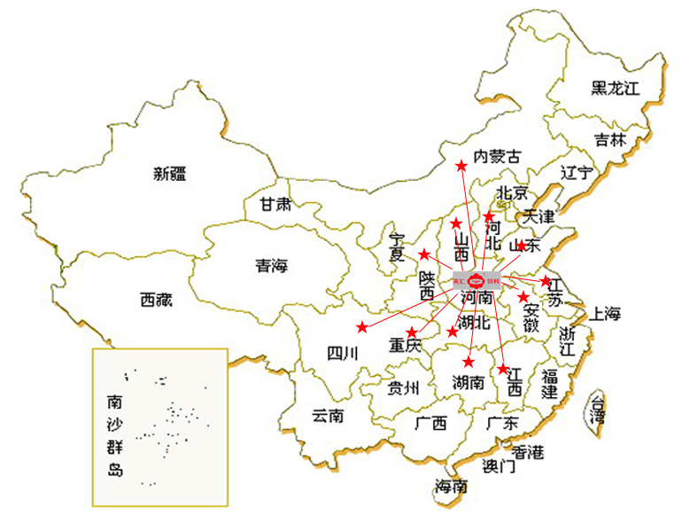

郑州聚创饲料有限公司在中华民族的母亲河——黄河中下游，有一座文明古老的城市，这就是享有绿城美誉的河南省省会——郑州
郑州地处中原，十省通衢，是贯穿南北的交通枢纽和全国物资集散中心。聚创凭借其独特的区域优势，以强牧兴农、产业报国为使命，承接中原崛起的契机，强抓机遇，与时俱进，已成为中国饲料行业一颗璀璨的明星。郑州聚创饲料生产基地位于郑州市东四环与北四环交汇口黄庄饲料工业区，总占地面积20000余平米，厂房6000余平方米，项目配套齐全，规模宏大，具有生产浓颗料30万吨，预混料添加剂5万吨的年生产能力，整套设备工艺先进、国内一流，是河南省国家重点工程项目之一，已成为中原地区最具竞争实力的现代化饲料企业。

各地分公司